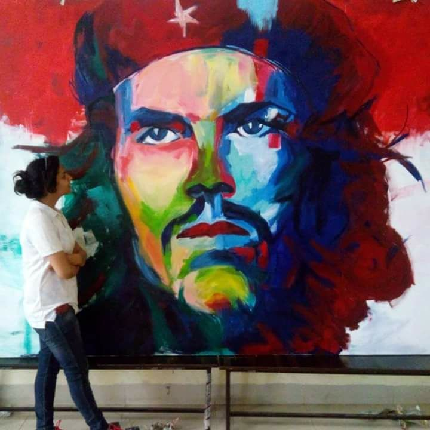
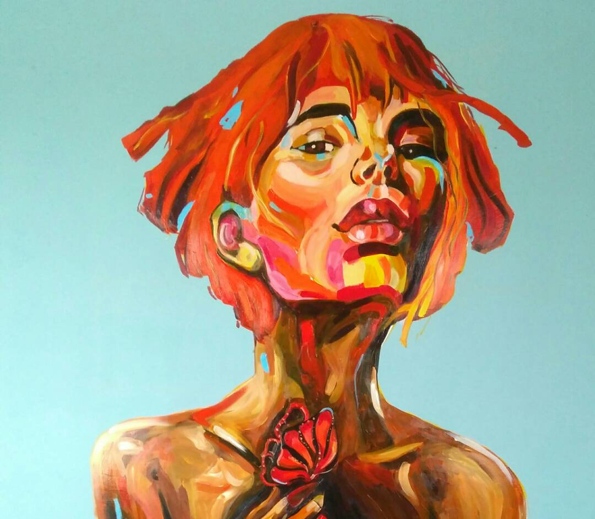
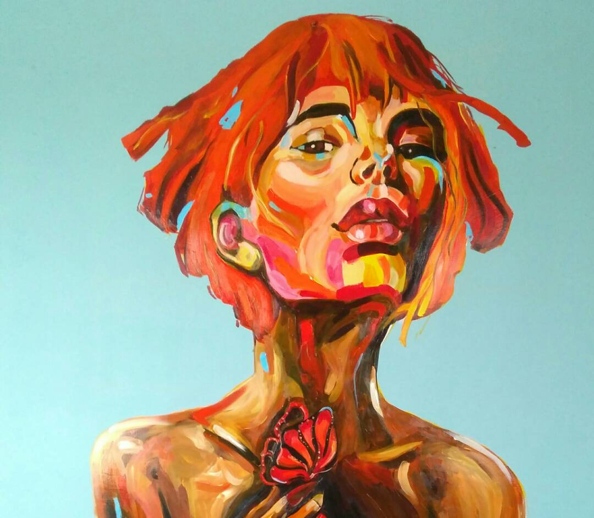
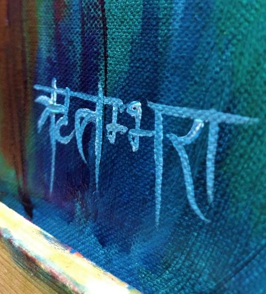
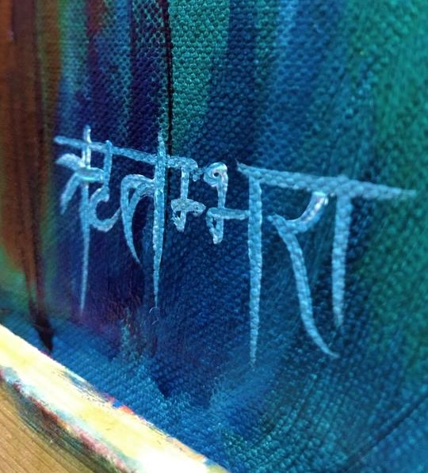

Growing up as an artist's (my mom's) daughter, I have always felt art closely. It is not only my escape from reality, but also my reflection. My style comprises of visible, bold strokes of different colours and I particularly like to draw and paint humans. I work with a variety of media and am still expanding my horizon. I am highly inspired by Anna Bocek, Voka and Andrew Atroshenko and have tried to recreate some of their Popular works. I work as a commissioned portrait artist and paint walls professionally. Also, I am the go-to person for all my friends having troubles during DIYs.

 

 
